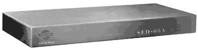

随着“信息高速公路”的无限延长、电子商务在国内的扩张，信息和信息设施安全的重要性正在日益凸显出来。网络的安全性将最终成为一个关乎国家安全的重要因素。从上半年的“科索沃战争”、前不久爆出的奔腾Ⅲ序列号风波，众多的事例一再向国人发出这样的讯息：信息安全已经成为我们必须直面的问题。
路由器（Router）是因特网上最重要的通讯设备之一，这种被称为连接网络的“桥梁”的核心设备承担了整个因特网数据传输的重任，它的安全性从某种程度上来讲决定着整个网络的安全性。到目前为止，国内在网络建设中采用的路由器几乎是清一色的国外产品，这就好比把自己的命脉交到了外人的手中。近日的一个“桑达路由器抗攻击测试活动”的成功举办，多少让关心国内网络和信息安全的人们看到了改变这种“尴尬”局面的希望。
试验从11月1日上午8点到11月4日上午8点，连续进行了72个小时，活动组织者深圳桑达公司公布了路由器的IP地址，允许任何人从因特网上对该设备实施任何形式的攻击，不受时间、地点、工具的限制。
在这不算长的72小时里，参与测试的SED－08路由器经受了1850多人次的连续“狂轰滥炸”。路由器接收到4900万个攻击包，监测设备一共记录了23.5G字节的攻击数据。对攻击数据包网络地址的分析结果显示，大部分参与测试的攻击者来自中国国内，少量的“黑客”被确认为美国等国外用户。据介绍，黑客的攻击手法多种多样，有些攻击手段甚至超出了目前已知的数千种“黑客”攻击手法的范围。一个来自美国的“黑客”以每秒100个数据包的速度连续7个小时攻击该路由器，企图使其瘫痪。还有的“黑客”首先对路由器的端口进行扫描，然后有选择性地向部分端口发送攻击数据包。然而，国内外“黑客”的一系列努力最终都无功而返。SED－08路由器成功抵御了各路进攻，无人能够成功突破系统并获取管理权限。
作为我国自行研制开发的第一台路由器SED－08早在1997年1月就通过了生产定型鉴定，进行批量生产，其后开发的专用操作系统SED－ROS的研制成功和投入使用更让SED－08在安全性方面如虎添翼，可靠性大为提高。
以计算机、网络和通讯技术为主的IT产业的发展水平，将不仅仅是衡量未来国家科技水平的重要标准，它更将上升到决定国家发展前途命运的地位。我们关注中国IT产业的发展，更理所当然地应该关心中国信息安全的状况，这已经不是一个单纯的技术或商业的话题，它关乎未来中国的国家利益。当以联想、方正等为代表的民族品牌PC与实力雄厚的国外厂商“逐鹿中原”，并成功上演了“御敌于国门之外”漂亮反击战的时候，在通讯和网络产品商品里具有自主知识产权，完全“Made in China”的IT产品仍是寥若晨星。因此，这次路由器试验的意义就在于它的整套系统完全由国内技术人员参与研发。
我们应该高兴的是，我们现在能进入这个网络安全的主战场，即使与国外的产品相比还有差距，我们也能高兴地说：“我们进来了，我们能做到！”在网络安全方面，最尖端的加密技术还被美国人垄断着，我们没有必要，也没有精力去和他们硬拚，软件不行，我们可以从硬件着手。
当测试活动结束之后，我们却应该保持更为清醒的头脑。测试毕竟仅仅是测试，国产路由器能否经受实际运行过程中长期性的残酷考验，还需要更多的事实来说话。除了此次测试中的抗攻击能力，拥有全部自主知识产权的国产路由器在稳定性、运行效率等方面的表现也值得每一个热心民族IT产业发展的人士关注。不论如何，我们真心希望国产路由器能够再接再厉，为蓬勃兴起的中国网络构筑起一道坚不可摧的“网上长城”。 |